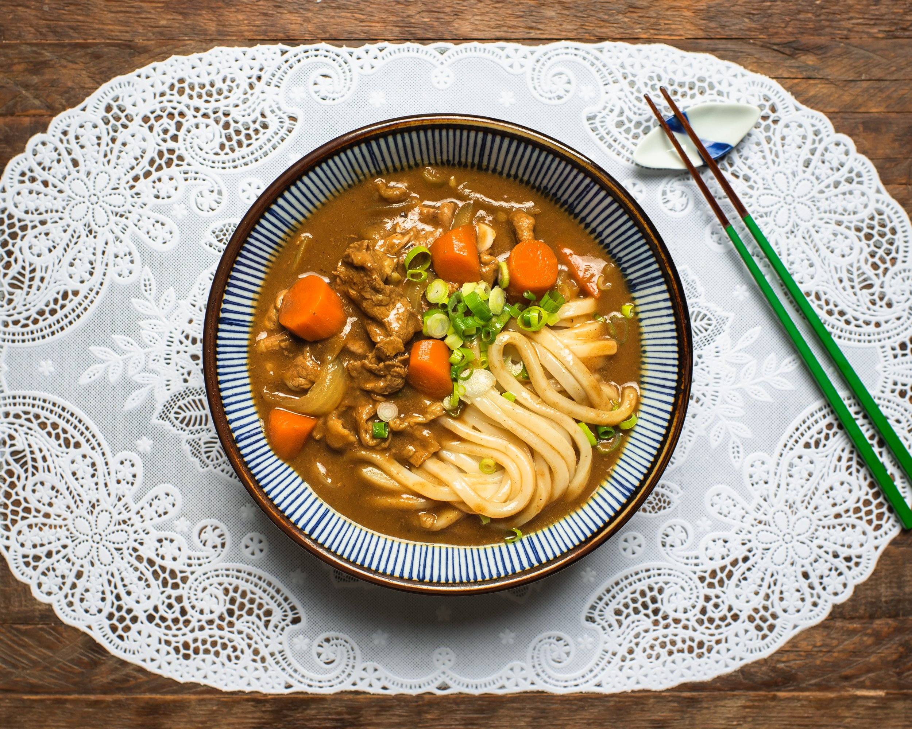

Curry Udon

Description
Curry udon is a comforting and hearty Japanese noodle dish that combines thick, chewy udon noodles with a rich
and flavorful curry sauce.
To start, a savory curry base is made by simmering onions, garlic,
and ginger in a pot with a bit of oil until they become fragrant and translucent.
Next, curry roux or curry powder is added along with vegetable or chicken
broth, creating a thick, aromatic sauce.
This curry mixture is allowed to simmer and thicken, absorbing the robust flavors of the spices and melding
together into a smooth sauce.
Once the curry sauce is ready, cooked udon noodles are added to the pot and stirred to coat them
evenly with the curry sauce.
You can also include additional ingredients such as sliced mushrooms, bok
choy,
or sliced chicken to enhance the dish's texture and flavor.
The curry udon is simmered briefly to ensure the noodles are well-coated and heated through.
Garnish with sliced green onions or a sprinkle of sesame seeds,
and serve hot for a satisfying meal that's both comforting and full of flavor.
Ingredients
- Udon noodles
- Onion
- Garlic
- Ginger
- Curry roux or curry powder
- Vegetable or chicken broth
Steps
- Prepare Ingredients:
- Slice onions, garlic, and ginger.
- Prepare curry roux or curry powder.
- Cook udon noodles according to package instructions.
- Sauté Aromatics:
- Heat oil in a pot over medium heat.
- Add onions, garlic, and ginger, and sauté until fragrant and translucent.
- Make Curry Sauce:
- Add curry roux or curry powder to the pot.
- Pour in vegetable or chicken broth and stir to combine.
- Simmer the mixture, allowing it to thicken and the flavors to meld together.
- Add Additional Ingredients (Optional):
- Add sliced mushrooms, bok choy, or sliced chicken to the curry sauce, if desired.
- Simmer until the additional ingredients are cooked through.
- Combine with Noodles:
- Add cooked udon noodles to the pot.
- Stir to coat the noodles evenly with the curry sauce.
- Simmer:
- Let the curry udon simmer briefly to ensure the noodles are heated through and well-coated with
sauce.
- Garnish and Serve:
- Garnish with sliced green onions or a sprinkle of sesame seeds.
- Serve hot and enjoy.